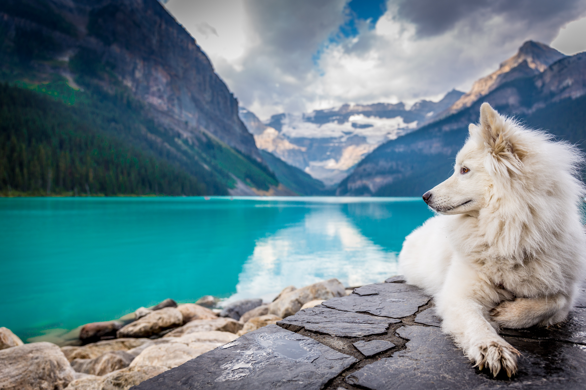

DOGGY AND LAKE
dog loves water and lakes
Most dogs go nuts when they see water. Why is that? Whether it’s a fountain, a puddle, the sea or a river, dogs are attracted and it’s impossible to stop them from jumping in. And who can blame them? Especially when it’s hot out!There are actually canine breeds defined as aquatic. Like the American Water Spaniel and the Irish Water Spaniel, who love water so much it became part of their breed’s name.There are only a few breeds who don’t get along really well with water, like the Bulldog, but that’s for structural reasons: they have a wide body and short legs. While they may not swim particularly well, that doesn’t mean they can’t have fun in the water! Dogs generally love rivers, lakes, the sea and swimming pools for the same reasons we do: because they’re so much fun and cool us down.